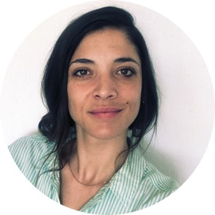

Nicola Jade
Feldmann
Automation engineer.Design and build.
I turn messy sales and operations processes into systems that run on their own, then design the pages, emails and tools people actually see. Self taught, working remotely from South Africa with UK clients.

Selected work
Eleven pieces from the last four months, each with the problem, what I built, how it works and what changed. Client names, prices and figures are kept out.
AI call classification for a sales team
Every answered sales call is read, classified and written back onto the contact, with the closer's promise turned into a task.
A live transfer lead system for a Facebook ad campaign
Fourteen workflows that message a new lead, hold until the closer is online, ring a caller and hand the lead straight over.
Making a lead pipeline move itself
An eleven stage pipeline that only moved when someone dragged a card, rebuilt so every stage moves on a system event.
A design system that checks itself before every build
One master file, eleven versions, two automated gates and a delivery checklist, so pages, emails and proposals stop drifting.
Proposal pages built around the customer's own questions
Custom proposal pages with AI renders of the customer's actual garden, two option estimates, and a drag and drop tool that made the renders repeatable.
A sales playbook and a role based CRM manual
Twenty one script cards from the founder's own words, real call examples, and one CRM manual gated by role instead of a guide per person.
A filming plan from 61 meeting recordings
Every content idea from three months of calls, turned into a page the founder could take into a meeting and onto a filming day.
Rebuilding a Wix site without losing its search ranking
A hybrid of native Wix text and custom HTML embeds, plus the funnel audit that found enquiries vanishing between the website and the CRM.
An instant booking page sent as a WhatsApp link
One mobile first page that sells a transfer and lets the client book and pay, with the risky cases fenced off to a conversation.
Lead forms wired into a CRM for two brands
A booking form that arrived with blank phone numbers and the wrong times, a dead homepage form, and a sister brand with no lead capture at all.
Brand kits and a branded document system
Two brand kits that demonstrate their own rules, a card catalogue with an emoji colour test, and confirmations and tickets built for a WhatsApp chat.
How I work
Three rules I keep coming back to.
Fix the capture before the campaign.
Nothing goes live until I know where every enquiry lands and who follows it up. Most of the lost leads I have found were lost quietly, between two systems.
Stages hold position, tags hold facts.
A CRM only stays honest when the rules are simple enough that nobody has to remember them. I write the rules down and make the workflows enforce them.
Design that checks itself.
Every page, email and proposal I build reads from one design system and passes an automated check before anyone sees it, so the hundredth file still matches the first.
Contact
If you have a process that runs on people remembering things, or pages that no longer match the business, I would like to hear about it.